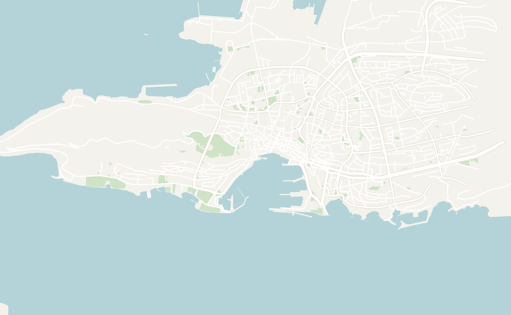
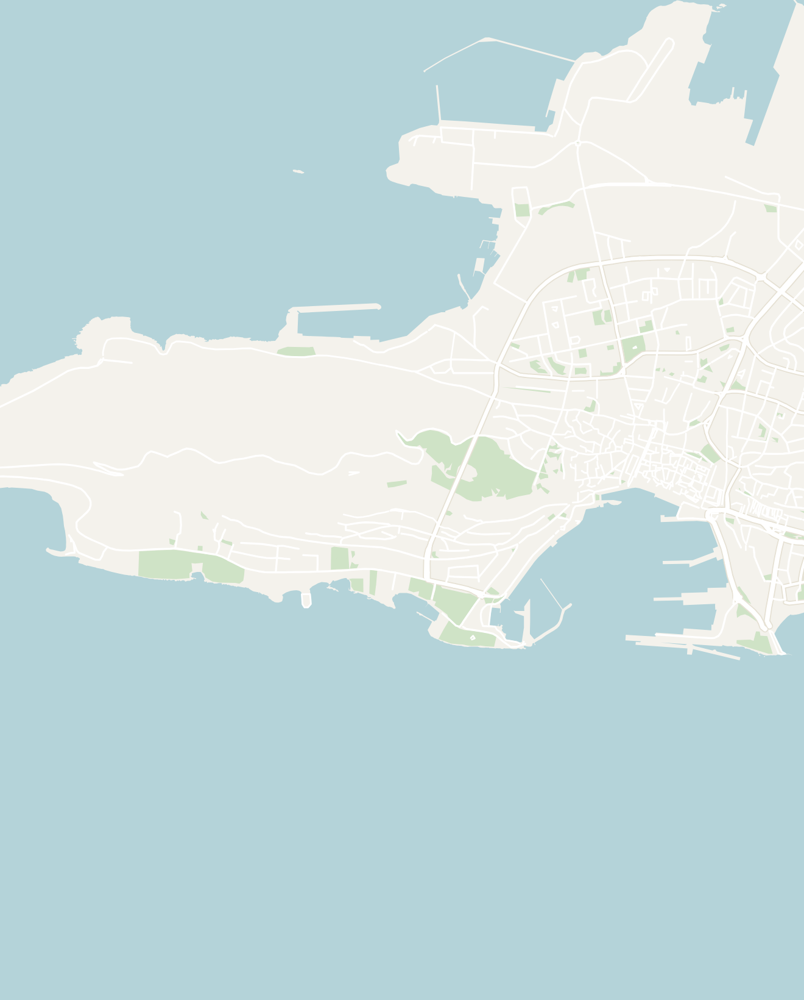
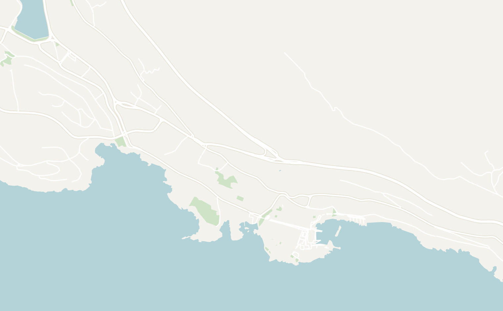
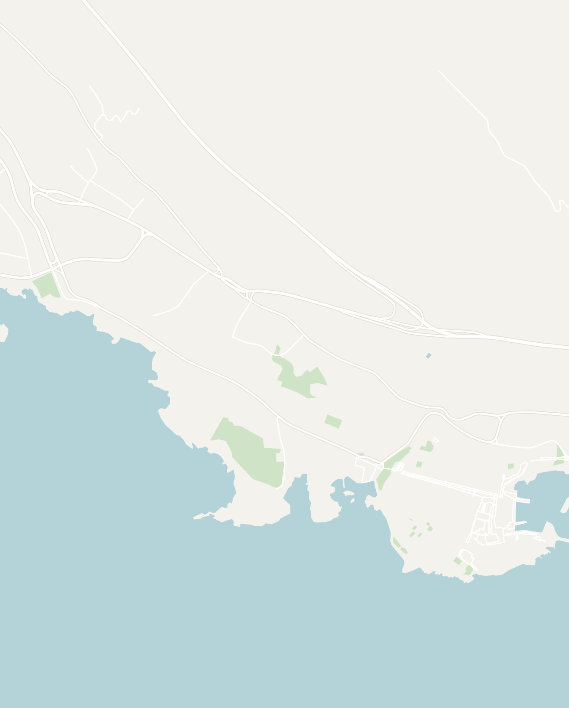
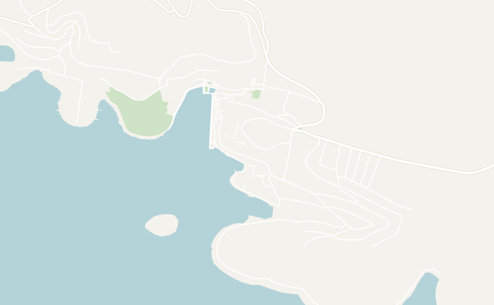
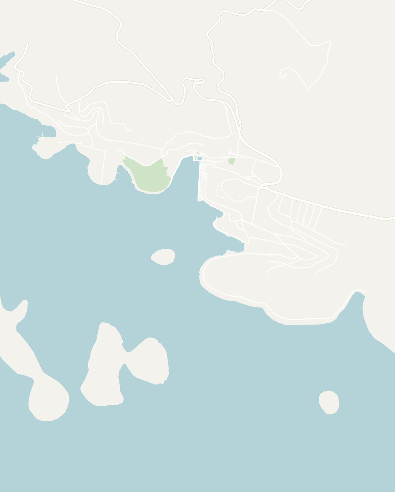

General
I loved Croatia so much that I went twice in one summer! As my introduction to the Balkans (one of my favorite regions to travel in the world), Croatia will always have a soft spot in my heart. The Dalmatian coastline is one of the most rewarding stretches of coastline in Europe: a thin ribbon of walled medieval towns, Roman ruins, an archipelago of pine-covered islands and impossibly blue Adriatic water. It has become hugely popular (thanks in no small part to Game of Thrones), but it's popular for good reason, and it's still easy to find quieter corners once you get off the main track.
These notes cover the Dalmatian coast, where I spent my time: Split as the hub, the walled city of Dubrovnik in the south, and the island of Hvar. It's an easy region to island-hop and pairs naturally with Bosnia (an easy day trip to Mostar) or Montenegro just across the southern border. Be sure to read my articles on those countries if you're planning to visit.
- Getting around
- Flights — the main coastal airports are Split and Dubrovnik, with Zagreb inland. All are well connected across Europe in summer so choose whichever airport is convenient for your travel route
- Buses — the best way to travel along the Croatian Coast. FlixBus and Arriva run frequent, comfortable and cheap services between Split, Dubrovnik and the smaller towns. There are limited trains in this part of Europe so buses are often more practical. I use traveling.com to book buses
- Ferries & Catamarans — Many companies offer run car ferries and fast passenger catamarans out to the many of islands Croatia, primarily from Split and Dubrovnik. Book island catamarans in advance in peak summer as popular routes sell out. Ferryhopper was a reliable resource to book ferries
- Ridesharing — Uber and Bolt both work well in major cities like Split and Dubrovnik. They are usually cheap and you can avoid the hassle of haggling with taxi drivers
- Car rental — worth it for exploring the coast, the national parks (Krka, Plitvice) and the island interiors at your own pace and the coastal drives are gorgeous. The one catch is that there is limited parking in many of the cities and Croatians can be crazy drivers at times
-
Food — Dalmatian cooking is Mediterranean and seafood-heavy, with a strong Italian influence. It was interesting to sample different dishes and there were still many of the Balkan staples like Ćevapi & Burek.
- Crni rižot — a black squid ink risotto and one of the most popular dishes along the coast. It's rich, but not overly fishy
- Pašticada — the classic Dalmatian special-occasion dish: beef marinated for a day, then slow-braised for hours in a rich, subtly sweet sauce of red wine, prošek, prunes and herbs, traditionally served over homemade gnocchi. It's my favorite Croatian dish that you won't find in other Balkan countries. Every family and restaurant has their own version of Pašticada
- Peka — a wonderful slow-cooked feast where lamb, veal or octopus and vegetables cook for hours under a heavy bell-shaped metal lid buried in glowing embers, leaving everything tender and faintly smoky. It's a proper occasion, usually ordered a day ahead for a group, and one of the most memorable meals you can have in Croatia
- Ćevapi & Burek — the cheap, delicious Balkan staples that'll fuel a budget trip: ćevapi are little grilled minced-meat sausages served in fluffy flatbread with raw onion and ajvar (red-pepper relish), and burek is a coil of flaky filo stuffed with meat, cheese or spinach. Both are filling, cost a few euros, and you'll be able to find them anywhere
- Language — the official language is Croatian (very similar to Serbian, Montenegrin & Bosnia). English is widely and confidently spoken all along the coast, so getting around is very easy
- Money — Croatia recently adopted the Euro in January 2023. The coast is noticeably pricier than the interior, and Dubrovnik and Hvar in particular get expensive in peak summer
- How long to stay — I'd budget 7–10 days for a coastal Croatia trip: start in Split, go to an island or two and then Dubrovnik. You can also easily combine Croatia with other countries in the Balkans like Slovenia, Bosnia or Montenegro
Split
2–3 days recommendedSplit is the beating heart of Dalmatia and the best base on the coast: its entire old town is built inside a 1,700-year-old Roman palace, and it's the main ferry hub for the islands. It's lively, walkable and well set up for backpackers, with beaches, viewpoints and a string of good day trips right on its doorstep.
There is something special about Split beyond the monuments and sights that I can't quite capture in words. I had an absolute blast the two times I visited. I would recommend spending 2 to 3 days here or longer if you just want to relax and soak in the Croatian sun.
- Diocletian's Palace & Old Town — built around AD 305 as the retirement residence of the Roman Emperor Diocletian, this vast palace is one of the best-preserved Roman monuments in Europe. After the fall of the Roman Empire, locals took refuge within its fortified walls, gradually transforming the palace into the city of Split. Today, ancient Roman temples, gates, and courtyards sit alongside cafés, restaurants, shops, and apartments, making it one of the most fascinating and unique old towns in Europe
- Cathedral of Saint Domnius — originally built as Diocletian's mausoleum nearly 1,700 years ago, it is one of the world's oldest cathedrals still in use. Climb the bell tower for sweeping views over Split's terracotta rooftops and the Adriatic Sea
- Split Golden Gate — the grand northern entrance to Diocletian's Palace, where Roman emperors once entered the city. Today it's one of the palace's most impressive entrances in the city and home to the towering statue of Gregory of Nin just outside the walls
- Riva promenade — Split's wide, palm-lined seafront promenade is the highlight of the city and runs along the harbor beneath the old palace walls. It is the social heart of the city. During the day, it is a great place for a stroll by the water. In the evening, everyone comes out for dinner along the water, an evening stroll and watch the sun set over the ferries
- Republic Square — while walking on the promenade, stop at a grand 19th-century square modeled after Venice's Piazza San Marco, surrounded by elegant arcaded buildings. It's a lively gathering place filled with cafés and frequently hosts concerts and festivals
- Marjan Hill — the big pine-forested hill and nature park rising right behind the old town, laced with walking and cycling trails, tiny hermit chapels and rocky swimming coves on its flanks. It's an easy climb up to the viewpoints for a sweeping panorama over the terracotta rooftops, harbor and islands, and it's the locals' escape for a jog, a swim or a sunset
- Klis Fortress — a dramatic medieval fortress straddling a rocky ridge just above Split, guarding the mountain pass inland for 2,000 years (and doubling as the city of Meereen in Game of Thrones). Walk the ramparts and towers for sweeping views down over the city and coast, and stop at one of the nearby restaurants famous for spit-roast lamb. Located just 20 minutes outside of Old Town split, it is easy to reach by local bus or Bolt
- Krka National Park — a popular day trip from Split to a series of wide waterfalls tumbling through a green river canyon. It's beautiful and generally a touch less mobbed than Plitvice Lakes National Park, with boardwalks winding right past the cascades. Swimming by the main falls is no longer permitted, so come for the scenery and a short walk
- Blue Lagoon & Island Boat Tour — a full-day boat trip out to the Blue Lagoon, a shallow, crystal-clear turquoise bay perfect for swimming and snorkeling. Tours usually stop at the city of Trogir and other islands along the way. Book online here or you can also easily book from the harbor the day before
- Trogir — a tiny old town on an islet just west of Split, packed with narrow Venetian streets and a beautiful cathedral. An easy half-day trip by local bus and a common stop on the island boat tours
- Croatian National Theater in Split — Split's striking yellow Neo-Baroque theater, opened in 1893, hosts opera, ballet, drama, and concerts. Even if you don't catch a performance, it's one of the city's most beautiful buildings
- Beaches — the water of the Adriatic is incredibly blue and crystal-clear. However, expect beaches in Croatia to be pebbly, rocky or sometimes just a dock
- Plaža Ježinac — a quiet pebble beach just west of the old town, popular with locals and a great spot for a swim without venturing far from the city center
- Kasjuni Beach — Split's most scenic beach, tucked beneath the forested slopes of Marjan Hill. Its crystal-clear water, relaxed beach bars, and views of the nearby islands make it one of the city's best places to spend a summer afternoon
- Cliff jumping — if you're feeling more adventurous, Split is a great spot to go cliff jumping since most of the shoreline is rocky. Head to the rocks along the coast just east of the old town (a short 20-minute walk), where there are various heights for different comfort levels
- Zalogajnica Dioklecijan — my favorite restaurant in Split, run by a wonderfully sassy old lady (check the reviews). It's hard to find, tucked upstairs behind some alleyways, but worth it for genuinely authentic Croatian home cooking and an outdoor area overlooking the harbor. The stuffed bell peppers with ground beef and potatoes are excellent
- Mlinar — a popular bakery chain that you'll see everywhere in Croatia. It is a great place to stop for a pastry and a coffee in the morning for breakfast. In Split, there is a location right by the Golden Gate entrance to the city
- ST Burek — a no-frills bakery doing great, greasy burek (flaky filo coils stuffed with your choice of meat, cheese or spinach) for a couple of euros. It is the perfect cheap, filling breakfast or late-night bite. You'll learn to love Burek on any trip to the Balkans
- Kebab House — exactly what it says: amazing, generously stuffed and very cheap kebabs. The portions were massive for just a few euros
- Charlie's Bar — the main backpacker bar in Split, a friendly spot with cheap drinks, located right in the old town. The hostel bar crawls all funnel through here, so it gets rammed and rowdy in high season, and it's the easy place to meet people
- Split is known to be quite the party town. I really enjoyed Disco Club 305 A.D. and Boiler Club. Join the bar crawl if you're looking to socialize and meet other backpackers
- Booze & Snooze Social Hostel — right the middle of the old town is Booze & Snooze Hostel and a very social hostel that runs its own crawls and events. It is a true party hostel where you'll get to know everyone who is staying there. Expect it to be loud, a bit dirty and not a place to get a good night's sleep, but a had an absolutely amazing time and it felt like a little family vibe when I stayed there
- Cornaro Hotel — this is the exact opposite of the previous entry! Cornaro Hotel is an exquisite 5 star hotel with very comfortable rooms and a wonderful view from the rooftop, complete with a bar, jacuzzi and rooftop pool


Double-tap to open in Google Maps
Dubrovnik
2 days recommendedDubrovnik is the "Pearl of the Adriatic": a perfectly preserved walled city of marble streets and terracotta roofs jutting out into the sea. It is instantly recognizable as King's Landing from Game of Thrones. Walking the walls at golden hour is one of those experiences that lives up to the hype. Dubrovnik is extremely popular nowadays so expect it to be busy, touristy and expensive.
You can walk across the old town in about 20 minutes and most of the attractions are self-contained within the city walls. I would spend ~2 days here and make sure to include a short trip to the quieter island of Lokrum located right across the water.
- Old Town — a quick 20-minute walk end-to-end. Most of the attractions are located inside of the walled city. The Old Town of Dubrovnik is tiny so it can easily feel overcrowded. Popular attractions like the City Walls or Rector's Palace are worth visiting early or near closing to beat the heat and massive cruise-ship crowds
- Dubrovnik City Walls — the main highlight of visiting Dubrovnik is walking along the ancient medieval walls. On one side, you'll have a beautiful view over the city and a sweeping view of the ocean on the other. Don't miss any of the cafés and bars built right into the walls along the way
- Franciscan Church and Monastery — just inside the Pile Gate, worth stepping into for its serene courtyard of slender carved columns and for the Old Pharmacy, founded in 1317 and one of the oldest continuously operating pharmacies in Europe. It doubles as both an active Pharmacy and a little museum of antique jars and instruments. A quick stop off the busy main street
- Rector's Palace — the graceful Gothic-Renaissance palace that was the seat of the Rector who governed the independent merchant Republic of Ragusa. Now a museum, it lets you wander the elegant courtyard, the old prison cells and rooms furnished as they once were, for a sense of how this tiny city-state ran itself and stayed free for centuries
- Jesuit Stairs — an elegant, curving Baroque staircase (modelled on Rome's Spanish Steps). If you're a Game of Thrones fan, you'll recognize it as Cersei's "walk of shame". Even without the TV connection, it's a great place to stop and there are plenty of restaurants nearby
- Porat Dubrovnik — the picturesque Old Port of Dubrovnik, where medieval stone walls meet the Adriatic Sea. Once the heart of the Republic of Ragusa's maritime trade, it's now lined with fishing boats, cafés, and tour boats departing for Lokrum Island and worth a quick stop right by the eastern entrance to the city
- Fort Lovrijenac — a dramatic freestanding fortress perched on a sheer cliff just beyond the western walls (the Red Keep in Game of Thrones). Your city-walls ticket usually covers it too, and the climb up is rewarded with the best view back across the water onto the entire walled old town
- Lokrum Island (Half Day Trip) — a lovely nature-reserve island a 15-minute ferry (or a kayak paddle) from the old harbor, and the perfect half-day escape from Dubrovnik's crowds. It is a much quieter than the busy town of Dubrovnik. You can hike across the island passing through shady pine and olive groves, rocky swimming spots, roaming peacocks and rabbits, a ruined monastery (another Game of Thrones set) and a small warm saltwater lake nicknamed the "Dead Sea." Bring water and swim shoes and make sure to catch the last ferry back since no one is allowed to stay on the island overnight
- Mount Srđ viewpoint — the hill rising straight behind the old town and the source of the classic aerial postcard of Dubrovnik: the whole walled city, its red roofs and the islands laid out far below. Ride the cable car up or hike the switchback trail, ideally around sunset. The Homeland War Museum and a restaurant sit at the top
- Homeland War Museum — located at the top of Mount Srđ, a museum covering the 1991–92 siege of Dubrovnik during the Croatian War of Independence. A great place to learn about the lesser known Balkan Wars that occurred as recently as the 1990s and early 2000s
- Restaurant Kopun — a lovely, slightly upscale restaurant on a quiet, atmospheric old-town square, specializing in classic Dubrovnik recipes. It's a splurge by Croatian standards, but genuinely excellent and unpretentious, and the candlelit square setting makes it a memorable dinner
- Gil's Little Bistro — a reliable, good-value spot for a plate of ćevapčići (the little grilled minced-meat sausages with flatbread and onion) and other Balkan grill staples. A solid casual lunch or early dinner between sightseeing
- Mlinar — a bakery chain you'll find in every Croatian town. I ended up grabbing breakfast here most mornings
- Buža Bar — a bar built into the rocks just outside the city wall. It is completely unlabeled and reached through a literal hole in the wall. Great for a sunset drink and cliff jumping into the sea (watch for sea urchins)
- Bard Mala Buža — a mellower, more low-key sibling of the famous Buža Bar, a little further along the rocks outside the sea walls. It has the same magical set-up of drinks and cushions on the cliffs above the Adriatic, usually with a calmer crowd. Watching the sunset form here was actually incredible and you can also take a swim off the rocks. Make sure to bring cash and it's drinks only (no food)
- Revelin — one of the coolest clubs that I'd ever been to. Revelin is spectacularly set inside the cavernous stone chambers of the 16th-century Revelin fortress by the old harbor, with big touring DJs in peak season. Expect it to be pricey, but when are you ever going to see a DJ inside of a real medieval castle
- Hostel Angelina — an amazing hostel tucked inside the Old Town just steps from the city walls. It is unlabeled, but easy to navigate to using google maps. It offers a social atmosphere, clean dorms and private rooms, and an unbeatable location for exploring the city's historic center on foot. Make sure to book in advance during the summer as it fills up a couple weeks out and expect to pay a premium for the location in Old Town


Double-tap to open in Google Maps
Hvar
2–3 days recommendedHvar is Croatia's most glamorous island, known for its elegant harbor, marble streets, luxury yachts, and vibrant nightlife. Beyond the lively waterfront, lies a slower-paced island of secluded coves, lavender fields, olive groves, and crystal-clear beaches. Rent a scooter and venture beyond Hvar Town to discover a much more relaxed side of the island, while the nearby Pakleni Islands offer some of the best swimming and beach-hopping on the Adriatic.
You can easily get to Hvar by ferry from Split and Dubrovnik with the journey taking less than a few hours depending on the location. I'd recommend spending 2 to 3 days in Hvar.
- Hvar Fortress — hike up from the main square to this 16th-century hilltop fortress for panoramic views over Hvar Town, its harbor, and the Pakleni Islands. It's the island's best viewpoint and we were lucky enough to catch one of the most incredible sunsets here while we were in Hvar
- Hvar Harbor Promenade — the beautiful marble-paved waterfront curving around Hvar Town's harbor, lined with superyachts, palm trees and the terraces of bars and restaurants. It is sleepy and sun-struck by day, it transforms after dark into the glamorous, buzzing heart of the island's famous nightlife. It's the main artery of the town, with everything from the fortress climb to the clubs coming off it
- Rent a Scooter — rent a scooter and explore the south side of the island: pine-forest roads, lavender fields and hidden swimming coves away from the crowds
- Pokonji Dol Beach — Hvar Town's most popular beach, just a 15–20 minute walk from the center. This sheltered pebble beach has crystal-clear water, beach bars, and sunbed rentals, making it an ideal spot for a relaxing swim close to town
- Dalmatino — the best restaurant on the island; upscale but not pretentious, with a complimentary house brandy and polenta amuse-bouche on arrival. The pašticada (braised beef) is exceptional
- Dva Ribara — another great restaurant located right on the promenade; the black cuttlefish risotto is excellent: fresh and not overpoweringly fishy
- Carpe Diem Beach — Hvar's legendary beach club, located on Stipanska Bay in the nearby Pakleni Islands and reached by a short water taxi from Hvar Town. Spend the day swimming, relaxing on sunbeds, and sipping cocktails before the venue transforms into one of Croatia's most famous nightlife spots after dark
- Hula Hula Beach Bar — Hvar's most famous sunset bar, perched on the rocks just outside the old town. DJs start spinning laid-back electronic music from the afternoon, and by sunset the place is packed with people enjoying cocktails and watching the sun sink into the Adriatic before heading into town for dinner or nightlife
- In general, base yourself in Hvar Town to be walkable to the harbor, fortress and nightlife and you won't need to rent a car
- Hostel Villa Skansi — located a short walk from Hvar Town, this is an amazing hostel with a clean rooms and nice common area. It was also very social with a bar crawl when I was there


Double-tap to open in Google Maps
Other Places to Consider
I stuck to the southern Dalmatian coast for my past couple visits to Croatia, but the country has plenty more worth adding with extra time:
- Plitvice Lakes National Park — Croatia's most famous natural wonder: a chain of sixteen turquoise lakes linked by waterfalls, threaded together by wooden boardwalks. Inland between Zagreb and the coast
- Zadar — an underrated coastal city with Roman ruins and two brilliant modern art installations on the waterfront: the Sea Organ and the Sun Salutation. Famous for its sunsets and a good alternative to the more busy Split
- Istria & Rovinj — the northern peninsula feels distinctly Italian, with hilltop towns, truffles, olive oil and wine. Rovinj is its picturesque coastal highlight
- Zagreb — the capital of Croatia that is often skipped in favor of the coast. It is worth a day or two for its café culture, museums (including the quirky Museum of Broken Relationships) and grand Austro-Hungarian old town
- The Islands — Croatia is home to over 1,244 islands so there are endless possibilities that you can explore. Brač is famous for the Golden Horn Beach, Vis is the most remote and unspoiled, with the dazzling Blue Cave on nearby Biševo, and Korčula is a quieter walled island town often compared to a mini Dubrovnik